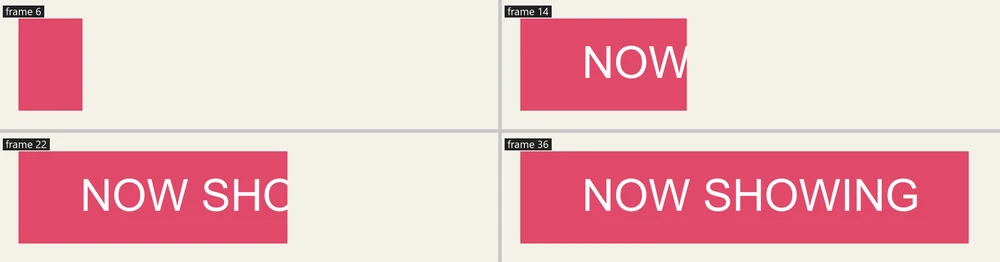
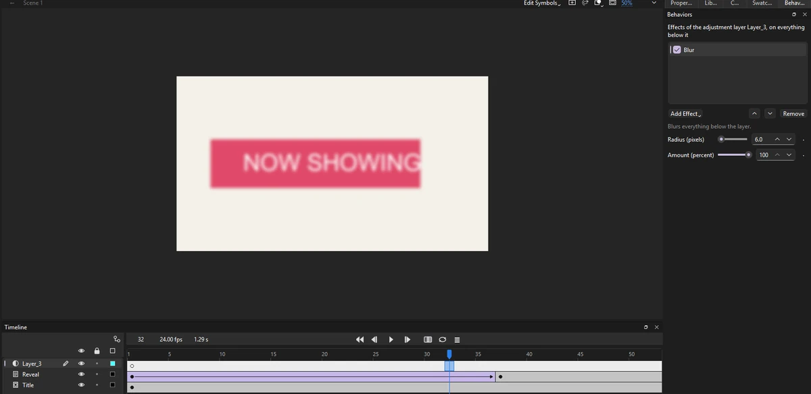

Tutorials
Track mattes and adjustment layers
Reveal a title through an animated track matte, then soften the picture with an adjustment layer.
This page is also a lesson inside Phoenix: choose and start Track mattes and adjustment layers, and Phoenix points at each control as you go. It takes about 7 minutes.
To follow along here instead, download the starting document, matte-reveal.fla, and open it with .

A track matte shows a layer only through the layer above it. Unlike a mask it can be soft, and it shows while you edit. An adjustment layer changes everything below it: blur, color, tint.
The Reveal layer holds a black bar that slides across the stage; under it is the Title.
1. Play it
Press Enter, or click the play button in the timeline header. The black bar slides across the title.
2. Use it as a matte
Press Enter again to stop. Right-click the Title layer's name and choose Track Matte > Alpha Matte.
The bar above is no longer drawn: the title shows only where the bar is.
3. Play it
Press Enter, or click the play button in the timeline header. The title is wiped on as the bar slides in.

4. Add a layer
Press Enter again to stop. Click the Reveal layer's name, then click the New Layer button under the layers, or choose Insert > Timeline > Layer. The new layer goes above it, on top.
5. Make it an adjustment layer
Right-click the new layer's name and choose Adjustment Layer. Everything below it blurs, and the Behaviors panel shows its Blur effect.
6. Set the blur
Click an empty part of the stage so nothing is selected. Set Radius (pixels) to 2 for a soft glow, or key it from 20 down to 0 for a title that comes into focus.
7. Color too
Click Add Effect and choose Tint or Color Correction: a night look, a flashback, a faded picture. Draw a shape on the adjustment layer and the effects apply only under it.
What you did
You revealed a title through a track matte and changed the picture with an adjustment layer.
A Luma Matte uses the light of the layer above instead of its shape: a soft gradient makes a soft wipe.
For everything this tutorial touches on, see Behaviors.